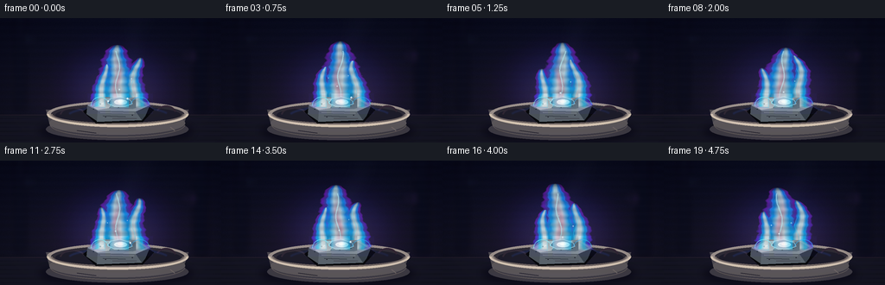
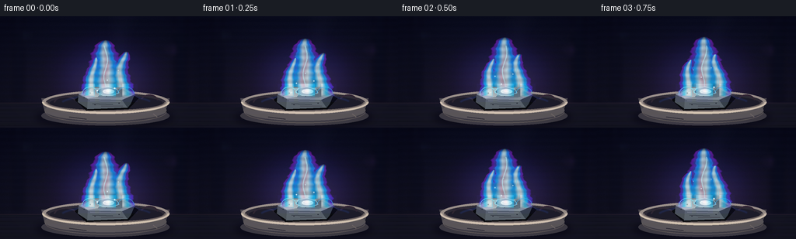

CODING AGENTS AS PIXEL WORLD MODELS
traex/GPT-5.6-Sol · material_0012
点击播放 · 原生 RGB 像素
逐轮保存的候选
回放视频、检查图与代码变化。
每份候选均可单独播放。实际图片检查记录在下方工具轨迹中。
候选 01播放与检查图
点击播放 · 原生 RGB 像素

展开代码变化
--- 上一保存版本
+++ 本次保存版本
@@ -0,0 +1,278 @@
+from pathlib import Path
+import math
+import numpy as np
+from PIL import Image, ImageDraw, ImageFilter
+import artifact_io
+
+# Deterministic, hand-built macro shot of burning lead.
+W, H, N = 256, 144, 20
+S = 3
+w, h = W*S, H*S
+rng = np.random.default_rng(120319)
+
+# fixed fine-grain field so only the fire, smoke, sparks, and reflected light move
+fixed_grain = rng.normal(0, 1, (h, w)).astype(np.float32)
+
+def sc(v):
+ if isinstance(v, (tuple, list)):
+ return tuple(int(round(x*S)) for x in v)
+ return int(round(v*S))
+
+def overlay(base, layer):
+ return Image.alpha_composite(base, layer)
+
+def soft_ellipse(size, box, color, blur):
+ layer = Image.new("RGBA", size, (0,0,0,0))
+ d = ImageDraw.Draw(layer)
+ d.ellipse(sc(box), fill=color)
+ return layer.filter(ImageFilter.GaussianBlur(sc(blur)))
+
+def make_background(frame):
+ yy, xx = np.mgrid[0:h, 0:w]
+ yf = yy / (h-1)
+ xf = xx / (w-1)
+ # blue-black workshop air, warmer close to the firebrick bench
+ top = np.array([5., 9., 17.])
+ bottom = np.array([20., 22., 25.])
+ arr = top[None,None,:]*(1-yf[...,None]) + bottom[None,None,:]*yf[...,None]
+ vignette = 1.0 - 0.36*((xf-.51)**2/.32 + (yf-.49)**2/.55)
+ arr *= np.clip(vignette[...,None], .64, 1)
+ # subtle warm reflected pool centered behind the specimen
+ glow = np.exp(-(((xx/S-136)/82)**2 + ((yy/S-91)/54)**2)*1.45)
+ pulse = 0.97 + .03*math.sin(frame*.91)
+ arr += glow[...,None] * np.array([25., 8., 20.])[None,None,:] * pulse
+ arr += fixed_grain[...,None] * 1.15
+ arr = np.clip(arr, 0, 255).astype(np.uint8)
+ im = Image.fromarray(arr, "RGB").convert("RGBA")
+ # Defocused lab fixtures in the distance.
+ b = Image.new("RGBA", (w,h), (0,0,0,0)); d=ImageDraw.Draw(b)
+ d.rectangle(sc((17,0,30,106)), fill=(5,8,13,145))
+ d.rectangle(sc((224,0,240,110)), fill=(3,7,12,165))
+ d.line(sc((33,37,88,37)), fill=(74,80,88,17), width=sc(1))
+ d.line(sc((183,18,225,18)), fill=(90,98,105,13), width=sc(1))
+ d.ellipse(sc((32,19,43,30)), fill=(50,75,92,21))
+ d.ellipse(sc((209,36,224,51)), fill=(72,43,82,20))
+ im=overlay(im,b.filter(ImageFilter.GaussianBlur(sc(3.5))))
+ # rear edge of matte laboratory worktop
+ b=Image.new("RGBA", (w,h),(0,0,0,0)); d=ImageDraw.Draw(b)
+ d.rectangle(sc((0,112,256,144)), fill=(18,19,21,255))
+ d.line(sc((0,112,256,112)), fill=(92,66,62,55), width=sc(1))
+ for y in range(116,145,5):
+ d.line(sc((0,y,256,y)), fill=(78,72,67,7), width=sc(1))
+ return overlay(im,b)
+
+def draw_smoke(im, frame):
+ # barely visible bluish smoke wisps, moving continuously to upper right
+ layer=Image.new("RGBA",(w,h),(0,0,0,0)); d=ImageDraw.Draw(layer)
+ t=frame/4.0
+ for k in range(6):
+ y=67-k*13 - ((t*7.5 + k*4.1)%17)
+ x=145 + k*3.6 + 5*math.sin(t*.8+k*1.25)
+ rx=7+k*1.5; ry=11+k*2.3
+ a=max(3, 17-k*2)
+ d.ellipse(sc((x-rx,y-ry,x+rx,y+ry)), fill=(107,127,157,a))
+ return overlay(im,layer.filter(ImageFilter.GaussianBlur(sc(8))))
+
+def add_fire_glow(im, frame):
+ pulse=0.92+0.08*math.sin(frame*1.31+0.4)
+ layer=Image.new("RGBA",(w,h),(0,0,0,0))
+ d=ImageDraw.Draw(layer)
+ d.ellipse(sc((70,26,204,132)),fill=(68,30,255,int(33*pulse)))
+ d.ellipse(sc((91,54,183,124)),fill=(0,171,255,int(48*pulse)))
+ d.ellipse(sc((109,72,168,122)),fill=(255,90,61,int(34*pulse)))
+ return overlay(im,layer.filter(ImageFilter.GaussianBlur(sc(18))))
+
+def draw_crucible(im, frame):
+ # refractory porcelain boat and cast shadow
+ im=overlay(im,soft_ellipse((w,h),(45,119,224,143),(0,0,0,180),5))
+ layer=Image.new("RGBA",(w,h),(0,0,0,0)); d=ImageDraw.Draw(layer)
+ # outside wall, with nested tonal ellipses for softly curved ceramic
+ d.polygon([sc(p) for p in [(53,106),(218,106),(210,130),(191,138),(77,137),(59,129)]],fill=(79,76,70,255))
+ d.ellipse(sc((53,116,218,141)),fill=(63,61,58,255))
+ d.ellipse(sc((57,108,214,135)),fill=(96,91,82,255))
+ d.ellipse(sc((54,96,218,126)),fill=(164,153,134,255))
+ d.ellipse(sc((59,99,213,123)),fill=(45,43,41,255))
+ d.ellipse(sc((64,102,209,122)),fill=(27,27,28,255))
+ # front rim hides inner bowl and gives thickness
+ d.arc(sc((54,96,218,126)),0,180,fill=(227,210,178,255),width=sc(3))
+ d.arc(sc((59,99,213,123)),0,180,fill=(117,106,91,255),width=sc(2))
+ d.arc(sc((58,109,214,138)),2,178,fill=(205,190,161,120),width=sc(1))
+ # fire stains and ceramic chips
+ d.arc(sc((69,103,99,121)),185,338,fill=(56,48,43,180),width=sc(2))
+ d.arc(sc((180,101,204,120)),206,345,fill=(66,48,44,150),width=sc(2))
+ d.line(sc((89,130,111,133)),fill=(53,51,49,120),width=sc(1))
+ d.line(sc((197,126,202,130)),fill=(223,207,177,130),width=sc(1))
+ im=overlay(im,layer)
+ # animated violet/cyan light on porcelain inner lip
+ refl=Image.new("RGBA",(w,h),(0,0,0,0)); rd=ImageDraw.Draw(refl)
+ a=int(32+8*math.sin(frame*.8))
+ rd.arc(sc((76,100,198,128)),198,339,fill=(48,102,255,a),width=sc(4))
+ rd.arc(sc((96,100,180,125)),202,323,fill=(17,221,255,a+8),width=sc(2))
+ return overlay(im,refl.filter(ImageFilter.GaussianBlur(sc(.8))))
+
+def flame_layer(frame, foreground=False):
+ yy,xx=np.mgrid[0:h,0:w]
+ X=xx/S; Y=yy/S
+ t=frame/4.0
+ # three coherent flickering tongues; smooth time dependence avoids random-frame boiling
+ fields=[]
+ params=[
+ (136.0, 104.0, 78.0, 27.0, 0.0),
+ (118.0, 103.0, 50.0, 12.0, 1.7),
+ (156.0, 104.0, 62.0, 15.0, 3.1),
+ ]
+ for j,(cx,base,height,width,ph) in enumerate(params):
+ # tongue height and sway cycle independently yet periodically
+ hh=height*(.94+.055*math.sin(t*2.0+ph))
+ u=(base-Y)/hh
+ # stronger sideways drift toward the tips
+ center=cx + (2.2+2*j)*np.sin(Y*.105 + t*(1.8+.17*j)+ph)*(np.clip(u,0,1)**1.25)
+ center += (4.6 if j==0 else 2.0)*math.sin(t*1.15+ph)*np.clip(u,0,1)**2
+ wid=width*np.power(np.clip(1-u,0,1), .43) + (1.15 if j==0 else .65)
+ # stable, small ripples at the perimeter
+ ripple=1 + .075*np.sin(Y*.55 - t*5.0 + ph) + .035*np.sin(Y*1.21+t*3.2+ph)
+ q=np.abs(X-center)/(wid*ripple+1e-3)
+ vertical=(u>0)&(u<1)
+ strength=np.clip((1.10-q)*7.0,0,1)*vertical
+ # rounded cap and no hard line at the burner/metal surface
+ strength*=np.clip(u*20,0,1)*np.clip((1-u)*17,0,1)
+ fields.append((strength,q,u,center,wid))
+ # Max union of the tongues, while preserve nearest normalized distance for coloration
+ st=np.maximum.reduce([f[0] for f in fields])
+ qeff=np.minimum.reduce([np.where(f[0]>0,f[1],10) for f in fields])
+ ueff=np.maximum.reduce([np.where(f[0]>0,np.clip(f[2],0,1),0) for f in fields])
+ # transparent licking edge, denser core
+ edge=np.clip(st,0,1)
+ alpha=(28 + 180*np.power(edge,.67)).astype(np.float32)
+ alpha*=np.where(qeff<.67,1.0,.68)
+ # flames sit mostly behind metal; foreground returns only short base jets
+ if foreground:
+ low=(Y>87)&(Y<111)
+ side=((X>101)&(X<122))|((X>157)&(X<177))|((X>127)&(X<149))
+ alpha*=low*side*.72
+ # palette transitions: purple rim -> electric blue -> cyan-white hot interior
+ q=np.clip(qeff,0,1)
+ upper=np.clip(ueff,0,1)
+ outer=np.zeros((h,w,3),dtype=np.float32)
+ outer[...,0]=72+86*upper
+ outer[...,1]=35+25*(1-upper)
+ outer[...,2]=246
+ mid=np.stack([np.full((h,w),20.), 125+85*(1-upper), np.full((h,w),255.)],axis=-1)
+ core=np.stack([190+55*(1-upper), 240+15*(1-upper), np.full((h,w),255.)],axis=-1)
+ wm=np.clip((.88-q)/.35,0,1)[...,None]
+ wc=np.clip((.46-q)/.32,0,1)[...,None]
+ rgb=outer*(1-wm)+mid*wm
+ rgb=rgb*(1-wc)+core*wc
+ # intermittent rose/gold vapor filament, peculiar metallic flame coloration
+ filament=np.exp(-((X-(135+3*np.sin(Y*.13+t*2.8))) / 3.8)**2)*np.exp(-((Y-72)/27)**2)
+ filament*=st
+ fcol=np.array([255.,139.,181.])
+ rgb=rgb*(1-filament[...,None]*.44)+fcol*filament[...,None]*.44
+ alpha*=.92+.08*np.sin(Y*.71+t*5.2)
+ rgba=np.dstack([np.clip(rgb,0,255),np.clip(alpha,0,235)]).astype(np.uint8)
+ return Image.fromarray(rgba,"RGBA")
+
+def add_flame_filaments(im, frame, foreground=False):
+ # sharp emissive filaments give the transparent numerical flame definition
+ t=frame/4.0
+ layer=Image.new("RGBA",(w,h),(0,0,0,0)); d=ImageDraw.Draw(layer)
+ if not foreground:
+ pts=[]
+ for y in np.linspace(97,38,30):
+ u=(102-y)/67
+ x=136+2.3*math.sin(y*.14+t*2.3)+5.2*math.sin(t*1.1)*u*u
+ pts.append(sc((x,y)))
+ d.line(pts,fill=(185,247,255,138),width=sc(1.2))
+ pts2=[]
+ for y in np.linspace(98,58,20):
+ x=154+2.4*math.sin(y*.20+t*2.9+1.2)
+ pts2.append(sc((x,y)))
+ d.line(pts2,fill=(58,218,255,100),width=sc(.8))
+ else:
+ d.arc(sc((105,91,126,111)),180,350,fill=(136,245,255,145),width=sc(1))
+ d.arc(sc((151,91,173,111)),190,351,fill=(54,184,255,130),width=sc(1))
+ glow=layer.filter(ImageFilter.GaussianBlur(sc(2.2)))
+ return overlay(overlay(im,glow),layer)
+
+def draw_lead(im, frame):
+ # Rough, heavy, unmistakably metallic lead chunk: top plane plus two faceted sides.
+ layer=Image.new("RGBA",(w,h),(0,0,0,0)); d=ImageDraw.Draw(layer)
+ shadow=[(96,108),(112,96),(163,97),(178,106),(165,120),(111,122)]
+ d.polygon([sc(p) for p in shadow],fill=(5,6,8,220))
+ top=[(101,101),(116,91),(159,92),(173,101),(157,108),(113,107)]
+ d.polygon([sc(p) for p in top],fill=(137,148,158,255))
+ # top-plane facets / oxide patches
+ d.polygon([sc(p) for p in [(104,101),(118,93),(133,95),(126,104),(113,106)]],fill=(184,192,197,255))
+ d.polygon([sc(p) for p in [(133,95),(158,94),(169,101),(153,105),(126,104)]],fill=(102,117,131,255))
+ d.polygon([sc(p) for p in [(120,93),(151,93),(143,96),(128,96)]],fill=(226,231,230,190))
+ d.polygon([sc(p) for p in [(101,101),(113,107),(112,119),(100,111)]],fill=(76,83,90,255))
+ d.polygon([sc(p) for p in [(113,107),(157,108),(164,118),(112,120)]],fill=(91,100,109,255))
+ d.polygon([sc(p) for p in [(157,108),(173,101),(168,113),(164,118)]],fill=(56,65,75,255))
+ # metallic side highlight and scratches
+ d.line(sc((116,109,155,110)),fill=(176,186,192,180),width=sc(1))
+ d.line(sc((119,113,145,114)),fill=(58,67,76,190),width=sc(1))
+ d.line(sc((130,116,158,116)),fill=(157,164,167,90),width=sc(1))
+ d.line(sc((107,103,120,98)),fill=(235,238,236,125),width=sc(1))
+ # little oxide pits
+ for x,y,r in [(116,99,1.1),(150,101,.8),(137,103,.65),(122,114,.7),(153,112,.8),(108,105,.65)]:
+ d.ellipse(sc((x-r,y-r,x+r,y+r)),fill=(41,49,58,160))
+ d.arc(sc((x-r,y-r,x+r,y+r)),190,345,fill=(218,225,226,100),width=sc(.45))
+ im=overlay(im,layer)
+ # molten ignition spot and its glow on top surface
+ flick=.92+.08*math.sin(frame*1.23)
+ g=Image.new("RGBA",(w,h),(0,0,0,0)); gd=ImageDraw.Draw(g)
+ gd.ellipse(sc((124,88,154,105)),fill=(0,167,255,int(65*flick)))
+ im=overlay(im,g.filter(ImageFilter.GaussianBlur(sc(5))))
+ spot=Image.new("RGBA",(w,h),(0,0,0,0)); sd=ImageDraw.Draw(spot)
+ pool=[(124,98),(128,93),(139,91),(151,95),(153,99),(145,102),(132,102)]
+ sd.polygon([sc(p) for p in pool],fill=(71,119,153,230))
+ sd.line([sc(p) for p in pool+[pool[0]]],fill=(178,228,244,190),width=sc(1))
+ sd.ellipse(sc((132,94,147,100)),fill=(235,253,255,210))
+ sd.ellipse(sc((136,95,143,98)),fill=(255,255,249,255))
+ return overlay(im,spot)
+
+def draw_sparks(im, frame):
+ t=frame/4.0
+ glow=Image.new("RGBA",(w,h),(0,0,0,0)); gd=ImageDraw.Draw(glow)
+ sharp=Image.new("RGBA",(w,h),(0,0,0,0)); sd=ImageDraw.Draw(sharp)
+ # repeatable staggered particles, only a few to keep the burn steady
+ for k in range(7):
+ age=(t*.48 + k*.173) % 1.0
+ if age>.72: continue
+ sx=125+(k*13)%28
+ vx=-9+((k*7)%19)
+ x=sx+vx*age+2*math.sin(k*2.1+age*5)
+ y=96-82*age+20*age*age
+ r=max(.28,1.05*(1-age/.72))
+ a=int(225*(1-age/.72))
+ gd.ellipse(sc((x-2.4*r,y-2.4*r,x+2.4*r,y+2.4*r)),fill=(70,124,255,a//2))
+ sd.ellipse(sc((x-r,y-r,x+r,y+r)),fill=(231,248,255,a))
+ im=overlay(im,glow.filter(ImageFilter.GaussianBlur(sc(2.2))))
+ return overlay(im,sharp)
+
+def render(frame):
+ im=make_background(frame)
+ im=draw_smoke(im,frame)
+ im=add_fire_glow(im,frame)
+ im=draw_crucible(im,frame)
+ # main plume starts from behind the lead chunk
+ im=overlay(im,flame_layer(frame,False))
+ im=add_flame_filaments(im,frame,False)
+ im=draw_lead(im,frame)
+ # short flames visibly wrap around the front and sides
+ im=overlay(im,flame_layer(frame,True))
+ im=add_flame_filaments(im,frame,True)
+ im=draw_sparks(im,frame)
+ # subtle foreground vignette, retaining bright flame whites
+ arr=np.asarray(im.convert("RGB"),dtype=np.float32)
+ yy,xx=np.mgrid[0:h,0:w]
+ rad=((xx/w-.5)/.72)**2+((yy/h-.52)/.83)**2
+ fac=np.clip(1-.18*rad, .79, 1.0)
+ arr*=fac[...,None]
+ out=Image.fromarray(np.clip(arr,0,255).astype(np.uint8),"RGB")
+ out=out.resize((W,H),Image.Resampling.LANCZOS)
+ return np.asarray(out,dtype=np.uint8)
+
+frames=np.stack([render(i) for i in range(N)],axis=0)
+artifact_io.save(frames,Path(__file__).resolve().parent)
+print("saved",frames.shape,frames.dtype,"range",frames.min(),frames.max())
候选 02播放与检查图
点击播放 · 原生 RGB 像素


展开代码变化
--- 上一保存版本
+++ 本次保存版本
@@ -143,7 +143,9 @@
ueff=np.maximum.reduce([np.where(f[0]>0,np.clip(f[2],0,1),0) for f in fields])
# transparent licking edge, denser core
edge=np.clip(st,0,1)
- alpha=(28 + 180*np.power(edge,.67)).astype(np.float32)
+ # Fully transparent away from the plume. The soft edge itself remains
+ # translucent, like a real low-pressure metal flame.
+ alpha=(218*np.power(edge,.67)).astype(np.float32)
alpha*=np.where(qeff<.67,1.0,.68)
# flames sit mostly behind metal; foreground returns only short base jets
if foreground:
候选 03播放与检查图
可观测工具轨迹
实际执行的命令与返回图片。
命令 1exit 0
/bin/bash -lc "cat prompt.txt && printf '\\n---RULES---\\n' && cat GENERATION_RULES.md && printf '\\n---SPEC---\\n' && cat task_spec.json"
命令 2exit 0
/bin/bash -lc "find . -maxdepth 2 -type f -printf '%p %s bytes\\n' | sort | head -200"
命令 3exit 0
/bin/bash -lc "sed -n '1,240p' artifact_io.py"
命令 4exit 0
/bin/bash -lc "cat > generate.py <<'PY'
from pathlib import Path
import math
import numpy as np
from PIL import Image, ImageDraw, ImageFilter
import artifact_io
# Deterministic, hand-built macro shot of burning lead.
W, H, N = 256, 144, 20
S = 3
w, h = W*S, H*S
rng = np.random.default_rng(120319)
# fixed fine-grain field so only the fire, smoke, sparks, and reflected light move
fixed_grain = rng.normal(0, 1, (h, w)).astype(np.float32)
def sc(v):
if isinstance(v, (tuple, list)):
return tuple(int(round(x*S)) for x in v)
return int(round(v*S))
def overlay(base, layer):
return Image.alpha_composite(base, layer)
def soft_ellipse(size, box, color, blur):
layer = Image.new(\"RGBA\", size, (0,0,0,0))
d = ImageDraw.Draw(layer)
d.ellipse(sc(box), fill=color)
return layer.filter(ImageFilter.GaussianBlur(sc(blur)))
def make_background(frame):
yy, xx = np.mgrid[0:h, 0:w]
yf = yy / (h-1)
xf = xx / (w-1)
# blue-black workshop air, warmer close to the firebrick bench
top = np.array([5., 9., 17.])
bottom = np.array([20., 22., 25.])
arr = top[None,None,:]*(1-yf[...,None]) + bottom[None,None,:]*yf[...,None]
vignette = 1.0 - 0.36*((xf-.51)**2/.32 + (yf-.49)**2/.55)
arr *= np.clip(vignette[...,None], .64, 1)
# subtle warm reflected pool centered behind the specimen
glow = np.exp(-(((xx/S-136)/82)**2 + ((yy/S-91)/54)**2)*1.45)
pulse = 0.97 + .03*math.sin(frame*.91)
arr += glow[...,None] * np.array([25., 8., 20.])[None,None,:] * pulse
arr += fixed_grain[...,None] * 1.15
arr = np.clip(arr, 0, 255).astype(np.uint8)
im = Image.fromarray(arr, \"RGB\").convert(\"RGBA\")
# Defocused lab fixtures in the distance.
b = Image.new(\"RGBA\", (w,h), (0,0,0,0)); d=ImageDraw.Draw(b)
d.rectangle(sc((17,0,30,106)), fill=(5,8,13,145))
d.rectangle(sc((224,0,240,110)), fill=(3,7,12,165))
d.line(sc((33,37,88,37)), fill=(74,80,88,17), width=sc(1))
d.line(sc((183,18,225,18)), fill=(90,98,105,13), width=sc(1))
d.ellipse(sc((32,19,43,30)), fill=(50,75,92,21))
d.ellipse(sc((209,36,224,51)), fill=(72,43,82,20))
im=overlay(im,b.filter(ImageFilter.GaussianBlur(sc(3.5))))
# rear edge of matte laboratory worktop
b=Image.new(\"RGBA\", (w,h),(0,0,0,0)); d=ImageDraw.Draw(b)
d.rectangle(sc((0,112,256,144)), fill=(18,19,21,255))
d.line(sc((0,112,256,112)), fill=(92,66,62,55), width=sc(1))
for y in range(116,145,5):
d.line(sc((0,y,256,y)), fill=(78,72,67,7), width=sc(1))
return overlay(im,b)
def draw_smoke(im, frame):
# barely visible bluish smoke wisps, moving continuously to upper right
layer=Image.new(\"RGBA\",(w,h),(0,0,0,0)); d=ImageDraw.Draw(layer)
t=frame/4.0
for k in range(6):
y=67-k*13 - ((t*7.5 + k*4.1)%17)
x=145 + k*3.6 + 5*math.sin(t*.8+k*1.25)
rx=7+k*1.5; ry=11+k*2.3
a=max(3, 17-k*2)
d.ellipse(sc((x-rx,y-ry,x+rx,y+ry)), fill=(107,127,157,a))
return overlay(im,layer.filter(ImageFilter.GaussianBlur(sc(8))))
def add_fire_glow(im, frame):
pulse=0.92+0.08*math.sin(frame*1.31+0.4)
layer=Image.new(\"RGBA\",(w,h),(0,0,0,0))
d=ImageDraw.Draw(layer)
d.ellipse(sc((70,26,204,132)),fill=(68,30,255,int(33*pulse)))
d.ellipse(sc((91,54,183,124)),fill=(0,171,255,int(48*pulse)))
d.ellipse(sc((109,72,168,122)),fill=(255,90,61,int(34*pulse)))
return overlay(im,layer.filter(ImageFilter.GaussianBlur(sc(18))))
def draw_crucible(im, frame):
# refractory porcelain boat and cast shadow
im=overlay(im,soft_ellipse((w,h),(45,119,224,143),(0,0,0,180),5))
layer=Image.new(\"RGBA\",(w,h),(0,0,0,0)); d=ImageDraw.Draw(layer)
# outside wall, with nested tonal ellipses for softly curved ceramic
d.polygon([sc(p) for p in [(53,106),(218,106),(210,130),(191,138),(77,137),(59,129)]],fill=(79,76,70,255))
d.ellipse(sc((53,116,218,141)),fill=(63,61,58,255))
d.ellipse(sc((57,108,214,135)),fill=(96,91,82,255))
d.ellipse(sc((54,96,218,126)),fill=(164,153,134,255))
d.ellipse(sc((59,99,213,123)),fill=(45,43,41,255))
d.ellipse(sc((64,102,209,122)),fill=(27,27,28,255))
# front rim hides inner bowl and gives thickness
d.arc(sc((54,96,218,126)),0,180,fill=(227,210,178,255),width=sc(3))
d.arc(sc((59,99,213,123)),0,180,fill=(117,106,91,255),width=sc(2))
d.arc(sc((58,109,214,138)),2,178,fill=(205,190,161,120),width=sc(1))
# fire stains and ceramic chips
d.arc(sc((69,103,99,121)),185,338,fill=(56,48,43,180),width=sc(2))
d.arc(sc((180,101,204,120)),206,345,fill=(66,48,44,150),width=sc(2))
d.line(sc((89,130,111,133)),fill=(53,51,49,120),width=sc(1))
d.line(sc((197,126,202,130)),fill=(223,207,177,130),width=sc(1))
im=overlay(im,layer)
# animated violet/cyan light on porcelain inner lip
refl=Image.new(\"RGBA\",(w,h),(0,0,0,0)); rd=ImageDraw.Draw(refl)
a=int(32+8*math.sin(frame*.8))
rd.arc(sc((76,100,198,128)),198,339,fill=(48,102,255,a),width=sc(4))
rd.arc(sc((96,100,180,125)),202,323,fill=(17,221,255,a+8),width=sc(2))
return overlay(im,refl.filter(ImageFilter.GaussianBlur(sc(.8))))
def flame_layer(frame, foreground=False):
yy,xx=np.mgrid[0:h,0:w]
X=xx/S; Y=yy/S
t=frame/4.0
# three coherent flickering tongues; smooth time dependence avoids random-frame boiling
fields=[]
params=[
(136.0, 104.0, 78.0, 27.0, 0.0),
(118.0, 103.0, 50.0, 12.0, 1.7),
(156.0, 104.0, 62.0, 15.0, 3.1),
]
for j,(cx,base,height,width,ph) in enumerate(params):
# tongue height and sway cycle independently yet periodically
hh=height*(.94+.055*math.sin(t*2.0+ph))
u=(base-Y)/hh
# stronger sideways drift toward the tips
center=cx + (2.2+2*j)*np.sin(Y*.105 + t*(1.8+.17*j)+ph)*(np.clip(u,0,1)**1.25)
center += (4.6 if j==0 else 2.0)*math.sin(t*1.15+ph)*np.clip(u,0,1)**2
wid=width*np.power(np.clip(1-u,0,1), .43) + (1.15 if j==0 else .65)
# stable, small ripples at the perimeter
ripple=1 + .075*np.sin(Y*.55 - t*5.0 + ph) + .035*np.sin(Y*1.21+t*3.2+ph)
q=np.abs(X-center)/(wid*ripple+1e-3)
vertical=(u>0)&(u<1)
strength=np.clip((1.10-q)*7.0,0,1)*vertical
# rounded cap and no hard line at the burner/metal surface
strength*=np.clip(u*20,0,1)*np.clip((1-u)*17,0,1)
fields.append((strength,q,u,center,wid))
# Max union of the tongues, while preserve nearest normalized distance for coloration
st=np.maximum.reduce([f[0] for f in fields])
qeff=np.minimum.reduce([np.where(f[0]>0,f[1],10) for f in fields])
ueff=np.maximum.reduce([np.where(f[0]>0,np.clip(f[2],0,1),0) for f in fields])
# transparent licking edge, denser core
edge=np.clip(st,0,1)
alpha=(28 + 180*np.power(edge,.67)).astype(np.float32)
alpha*=np.where(qeff<.67,1.0,.68)
# flames sit mostly behind metal; foreground returns only short base jets
if foreground:
low=(Y>87)&(Y<111)
side=((X>101)&(X<122))|((X>157)&(X<177))|((X>127)&(X<149))
alpha*=low*side*.72
# palette transitions: purple rim -> electric blue -> cyan-white hot interior
q=np.clip(qeff,0,1)
upper=np.clip(ueff,0,1)
outer=np.zeros((h,w,3),dtype=np.float32)
outer[...,0]=72+86*upper
outer[...,1]=35+25*(1-upper)
outer[...,2]=246
mid=np.stack([np.full((h,w),20.), 125+85*(1-upper), np.full((h,w),255.)],axis=-1)
core=np.stack([190+55*(1-upper), 240+15*(1-upper), np.full((h,w),255.)],axis=-1)
wm=np.clip((.88-q)/.35,0,1)[...,None]
wc=np.clip((.46-q)/.32,0,1)[...,None]
rgb=outer*(1-wm)+mid*wm
rgb=rgb*(1-wc)+core*wc
# intermittent rose/gold vapor filament, peculiar metallic flame coloration
filament=np.exp(-((X-(135+3*np.sin(Y*.13+t*2.8))) / 3.8)**2)*np.exp(-((Y-72)/27)**2)
filament*=st
fcol=np.array([255.,139.,181.])
rgb=rgb*(1-filament[...,None]*.44)+fcol*filament[...,None]*.44
alpha*=.92+.08*np.sin(Y*.71+t*5.2)
rgba=np.dstack([np.clip(rgb,0,255),np.clip(alpha,0,235)]).astype(np.uint8)
return Image.fromarray(rgba,\"RGBA\")
def add_flame_filaments(im, frame, foreground=False):
# sharp emissive filaments give the transparent numerical flame definition
t=frame/4.0
layer=Image.new(\"RGBA\",(w,h),(0,0,0,0)); d=ImageDraw.Draw(layer)
if not foreground:
pts=[]
for y in np.linspace(97,38,30):
u=(102-y)/67
x=136+2.3*math.sin(y*.14+t*2.3)+5.2*math.sin(t*1.1)*u*u
pts.append(sc((x,y)))
d.line(pts,fill=(185,247,255,138),width=sc(1.2))
pts2=[]
for y in np.linspace(98,58,20):
x=154+2.4*math.sin(y*.20+t*2.9+1.2)
pts2.append(sc((x,y)))
d.line(pts2,fill=(58,218,255,100),width=sc(.8))
else:
d.arc(sc((105,91,126,111)),180,350,fill=(136,245,255,145),width=sc(1))
d.arc(sc((151,91,173,111)),190,351,fill=(54,184,255,130),width=sc(1))
glow=layer.filter(ImageFilter.GaussianBlur(sc(2.2)))
return overlay(overlay(im,glow),layer)
def draw_lead(im, frame):
# Rough, heavy, unmistakably metallic lead chunk: top plane plus two faceted sides.
layer=Image.new(\"RGBA\",(w,h),(0,0,0,0)); d=ImageDraw.Draw(layer)
shadow=[(96,108),(112,96),(163,97),(178,106),(165,120),(111,122)]
d.polygon([sc(p) for p in shadow],fill=(5,6,8,220))
top=[(101,101),(116,91),(159,92),(173,101),(157,108),(113,107)]
d.polygon([sc(p) for p in top],fill=(137,148,158,255))
# top-plane facets / oxide patches
d.polygon([sc(p) for p in [(104,101),(118,93),(133,95),(126,104),(113,106)]],fill=(184,192,197,255))
d.polygon([sc(p) for p in [(133,95),(158,94),(169,101),(153,105),(126,104)]],fill=(102,117,131,255))
d.polygon([sc(p) for p in [(120,93),(151,93),(143,96),(128,96)]],fill=(226,231,230,190))
d.polygon([sc(p) for p in [(101,101),(113,107),(112,119),(100,111)]],fill=(76,83,90,255))
d.polygon([sc(p) for p in [(113,107),(157,108),(164,118),(112,120)]],fill=(91,100,109,255))
d.polygon([sc(p) for p in [(157,108),(173,101),(168,113),(164,118)]],fill=(56,65,75,255))
# metallic side highlight and scratches
d.line(sc((116,109,155,110)),fill=(176,186,192,180),width=sc(1))
d.line(sc((119,113,145,114)),fill=(58,67,76,190),width=sc(1))
d.line(sc((130,116,158,116)),fill=(157,164,167,90),width=sc(1))
d.line(sc((107,103,120,98)),fill=(235,238,236,125),width=sc(1))
# little oxide pits
for x,y,r in [(116,99,1.1),(150,101,.8),(137,103,.65),(122,114,.7),(153,112,.8),(108,105,.65)]:
d.ellipse(sc((x-r,y-r,x+r,y+r)),fill=(41,49,58,160))
d.arc(sc((x-r,y-r,x+r,y+r)),190,345,fill=(218,225,226,100),width=sc(.45))
im=overlay(im,layer)
# molten ignition spot and its glow on top surface
flick=.92+.08*math.sin(frame*1.23)
g=Image.new(\"RGBA\",(w,h),(0,0,0,0)); gd=ImageDraw.Draw(g)
gd.ellipse(sc((124,88,154,105)),fill=(0,167,255,int(65*flick)))
im=overlay(im,g.filter(ImageFilter.GaussianBlur(sc(5))))
spot=Image.new(\"RGBA\",(w,h),(0,0,0,0)); sd=ImageDraw.Draw(spot)
pool=[(124,98),(128,93),(139,91),(151,95),(153,99),(145,102),(132,102)]
sd.polygon([sc(p) for p in pool],fill=(71,119,153,230))
sd.line([sc(p) for p in pool+[pool[0]]],fill=(178,228,244,190),width=sc(1))
sd.ellipse(sc((132,94,147,100)),fill=(235,253,255,210))
sd.ellipse(sc((136,95,143,98)),fill=(255,255,249,255))
return overlay(im,spot)
def draw_sparks(im, frame):
t=frame/4.0
glow=Image.new(\"RGBA\",(w,h),(0,0,0,0)); gd=ImageDraw.Draw(glow)
sharp=Image.new(\"RGBA\",(w,h),(0,0,0,0)); sd=ImageDraw.Draw(sharp)
# repeatable staggered particles, only a few to keep the burn steady
for k in range(7):
age=(t*.48 + k*.173) % 1.0
if age>.72: continue
sx=125+(k*13)%28
vx=-9+((k*7)%19)
x=sx+vx*age+2*math.sin(k*2.1+age*5)
y=96-82*age+20*age*age
r=max(.28,1.05*(1-age/.72))
a=int(225*(1-age/.72))
gd.ellipse(sc((x-2.4*r,y-2.4*r,x+2.4*r,y+2.4*r)),fill=(70,124,255,a//2))
sd.ellipse(sc((x-r,y-r,x+r,y+r)),fill=(231,248,255,a))
im=overlay(im,glow.filter(ImageFilter.GaussianBlur(sc(2.2))))
return overlay(im,sharp)
def render(frame):
im=make_background(frame)
im=draw_smoke(im,frame)
im=add_fire_glow(im,frame)
im=draw_crucible(im,frame)
# main plume starts from behind the lead chunk
im=overlay(im,flame_layer(frame,False))
im=add_flame_filaments(im,frame,False)
im=draw_lead(im,frame)
# short flames visibly wrap around the front and sides
im=overlay(im,flame_layer(frame,True))
im=add_flame_filaments(im,frame,True)
im=draw_sparks(im,frame)
# subtle foreground vignette, retaining bright flame whites
arr=np.asarray(im.convert(\"RGB\"),dtype=np.float32)
yy,xx=np.mgrid[0:h,0:w]
rad=((xx/w-.5)/.72)**2+((yy/h-.52)/.83)**2
fac=np.clip(1-.18*rad, .79, 1.0)
arr*=fac[...,None]
out=Image.fromarray(np.clip(arr,0,255).astype(np.uint8),\"RGB\")
out=out.resize((W,H),Image.Resampling.LANCZOS)
return np.asarray(out,dtype=np.uint8)
frames=np.stack([render(i) for i in range(N)],axis=0)
artifact_io.save(frames,Path(__file__).resolve().parent)
print(\"saved\",frames.shape,frames.dtype,\"range\",frames.min(),frames.max())
PY
python generate.py"命令 5exit 0
/bin/bash -lc "python - <<'PY'
import numpy as np
from PIL import Image
fs=np.stack([np.array(Image.open(f'frames/{i:02d}.png')) for i in range(20)])
print('shape',fs.shape,fs.dtype)
print('frame mean',np.round(fs.mean((1,2,3)),2))
print('adj MAE',np.round(np.abs(fs[1:].astype(float)-fs[:-1]).mean((1,2,3)),3))
print('adj changed%',np.round((fs[1:]"'!=fs[:-1]).any(3).mean((1,2))*100,1))
# spatial summaries for central fire and object areas
for name,(y1,y2,x1,x2) in {'"'flame':(20,105,95,178),'lead':(90,122,95,176),'bowl':(98,140,50,220),'bg':(0,70,0,80)}.items():
a=fs[:,y1:y2,x1:x2]
print(name,'mean RGB',np.round(a.mean((0,1,2)),1),'max',a.max((0,1,2)),'temporal std',round(a.mean((1,2,3)).std(),2))
print('artifacts:')
PY
ls -lh pixels.npz index.html inspection.png transition_check.png frames/00.png frames/19.png"命令 6exit 0
/bin/bash -lc "python generate.py && python - <<'PY'
import numpy as np
from PIL import Image
fs=np.stack([np.asarray(Image.open(f'frames/{i:02d}.png')) for i in range(20)])
print('means',np.round(fs.mean((1,2,3)),2))
print('mae',np.round(np.abs(fs[1:].astype(float)-fs[:-1]).mean((1,2,3)),2))
print('valid',fs.shape,fs.dtype)
PY"保存候选 3 份；完成命令 6 次；可验证图片返回 0 张。原始 API 响应与完整日志保留在本地。